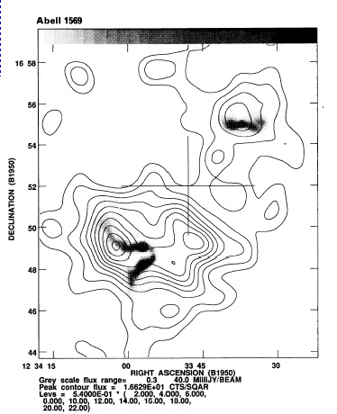
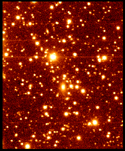
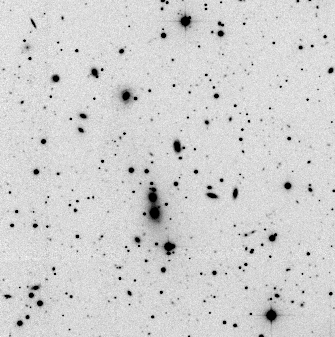

{kind=link}
 Here are several examples of WAT radio
galaxies from O'Donoghue et al (1992).
Here are several examples of WAT radio
galaxies from O'Donoghue et al (1992).|  | LEFT: an example of the clumping of x-ray emission around radio galaxies (in this case a WAT on the bottom left, and a Twin Jet FRI on the top). |
My interest in radio galaxies in clusters started with my dissertation work at NMSU. Radio galaxies like WATs make
useful probes of cluster evolution. Although they stem from a very small-scale phenomenon, AGN, their diffuse tails
extend far into the intracluster medium (ICM) and are presumably shaped and confined by this hot gas.
X-ray imaging for my dissertation confirmed that extended X-ray emission exists around WATs and shows
elongations correlated with the radio tails.
My redshift surveys have shown that the host galaxies of WATs are nearly at rest with respect to their
subcluster. It also shows that the host clusters of WATs do not have significantly higher occurance of substructure.
I am continuing to gather data to discern whether the clusters containing WATs show systematically more substructure than other clusters. This might be expected if the bending of the WATs is caused by winds generated in mergers. Another proposed explanation for the bending is winds along supercluster filaments.
| One cannot identify a WAT by its appearance in visual wavelengths. The supergiant elliptical located just below the center of this picture produces a WAT radio galaxy called 1919+479 . It is centrally located within a poor cluster of galaxies about 1.2 billion LY away. This CCD of 1919+479 through an R-band filter was taken with the Blue Mesa Observatory 24". | Here are several examples of WAT radio
galaxies from O'Donoghue et al (1992). |
The study of WAT clusters (above) has led into a broader effort to understand how clusters come together. It looks pretty clear that clusters form from mergers of subclusters (the heirarchical or "bottom-up" scenario), but I would like to understand some of the details. Are all subcluster mergers alike? How long does the appearance of substructure last in optical and X-rays? How can cD peculiar motions constrain the time since merger? And, especially, how does the formation of the cluster influence the properties of the constituent galaxies?
Some of these questions can be addressed with CCD imaging of clusters. The merger state of a cluster can be gleaned from the spatial distribution of the galaxies under the assumption that the distribution will be smooth and symmetric for a relaxed (equilibrated) cluster. Myself and others (Joe Mohr, U. Chicago)
have gathered Vand R CCD imaging of several dozen clusters in order to carry out an optical substructure survey. This should help with answering the last question above. The sample contains both x-ray bright, rich clusters, and low-luminosity, clumpy clusters. How will the galaxy populations and substructure differ?
I have also collaborated with George Rhee (UNLV) to look for systematic difference in SOR (substructure occurrence rate) in clusters of different types (e.g., radio-loud, radio-quiet). Rhee's student, Sandip Thanki, searched for systematic differences between high and low metallicity clusters in CCD images.
I have observed 10 WAT clusters with the KPNO Mosaic camera. The 1 degree field of view allows substructure analysis beyond the Abell radius for these clusters. Above is a 7 arcminute subimage from an R-band mosaic of Abell 562 (Texp=36 min). The WAT is associated with the lower galaxy in the pair of giant ellipticals.